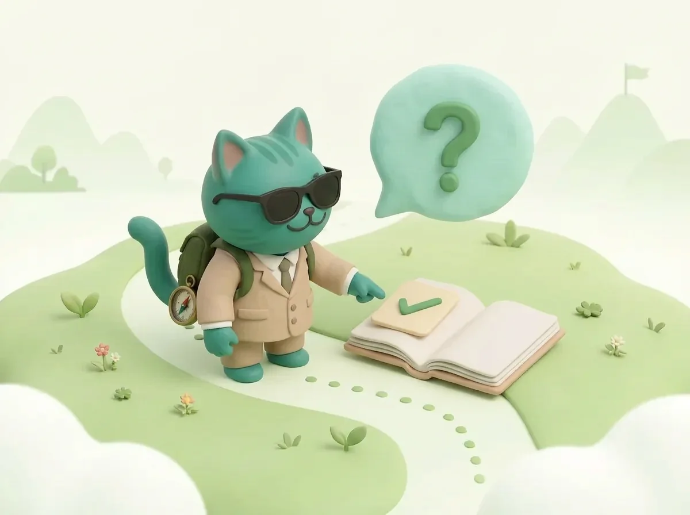

Вопросы и ответы
об английском
37 коротких ответов об английских словах и грамматике. Выбери вопрос или открой подробную статью.

Найди тему, открой вопрос и прочитай короткий ответ. Если нужны подробности, нажми на ссылку к статье.
Как учить слова
Реально ли выучить 1000 слов за месяц без подготовки?
Это быстрый темп: примерно 34 новых слова каждый день, не считая повторений. Это не значит, что все слова останутся в памяти; если трудно, учи меньше.
Сколько времени занимает занятие?
Время зависит от числа новых слов и повторений. Начни с короткого занятия и уменьши дневную норму, если не успеваешь.
Какие слова учить первыми?
Начни с частых слов для обычных ситуаций. Потом добавляй слова по своей цели: работа, поездка или экзамен. В BeWords есть подборки по уровням A1–C2.
Что делать, если слова всё равно забываются?
Это нормально. Попробуй вспомнить слово в другой день и составь с ним свою короткую фразу.
Бумага, таблица или приложение?
Подойдёт любой способ, которым тебе удобно пользоваться. Записывай слово с примером и возвращайся к списку.
Можно ли учить слова вместе с ребёнком?
Можно. Учи меньше слов за раз, используй картинки и делай короткие занятия. Темп выбирайте вместе с ребёнком.
Времена английского
Сколько времён нужно выучить, чтобы говорить?
Для начала полезны Present Simple, Past Simple, Present Continuous и обычные способы говорить о будущем (will, going to). Потом добавляй форму, когда она нужна в примере или разговоре.
В чём разница между Present Perfect и Past Simple?
Past Simple обычно называет законченное событие с законченным временем: I read it last year. Present Perfect связывает прошлое событие с настоящим и обычно не называет конкретный законченный момент: I have read it.
Почему в учебниках разное число времён?
В учебных пособиях часто дают 12 сочетаний времени и вида для удобства. В другой грамматической системе границы и названия могут отличаться. Поэтому число зависит от того, что именно считать отдельной формой.
Как быстро запомнить таблицу времён?
Не зубри всю таблицу сразу. Выбери одну форму, прочитай примеры и составь несколько своих фраз. Потом вернись к ним.
Когда переходить к другим формам?
После частых форм переходи к другим, когда встретишь их в тексте или захочешь точнее выразить, что действие длилось, завершилось или шло в процессе. Учить всё сразу не нужно.
Полезные темы
Это рейтинг поисковых запросов?
Нет. Это список полезных тем из журнала, а не статистический рейтинг поисковых запросов.
Почему выбраны эти темы?
Это основные темы для изучения английского. Список составлен редакцией журнала, а не поисковиком.
С чего начать, если я совсем новичок?
Начни с коротких вежливых фраз и частых слов. Потом попробуй составлять простые предложения о себе и своём дне.
Можно ли учить эти темы в приложении?
Приложение поможет учить слова и тренировать правила. Ещё полезно составлять свои фразы, читать, слушать и говорить.
Артикли a/an/the
Зачем английскому артикли, если в русском их нет?
Артикль помогает понять, говорим ли мы о предмете впервые или уже знаем, о каком именно. В русском это часто понятно из контекста.
The перед фамилией — это как?
The Smiths значит «семья Смитов». Перед именем одного человека артикль обычно не ставят: Mr Smith. Названия стран лучше учить по примерам.
A или an перед аббревиатурой?
Смотри на первый звук, который произносишь, а не на первую букву: an MBA, a university.
Почему at home, но in the morning?
Это устойчивые сочетания: at home и in the morning. Запоминай их целиком — одного простого правила для всех таких фраз нет.
Как перестать ошибаться в разговоре?
Читай короткий пример, составь свою фразу и скажи её вслух. Повторяй знакомые конструкции в разных ситуациях.
Слова для ЕГЭ
Сколько слов в списке ФИПИ?
ФИПИ не указывает точное число слов. Смотри официальный список тем и пробные задания.
Хватит ли школьных слов для ЕГЭ?
По одному числу слов нельзя определить балл. Проверь себя по официальным заданиям: на экзамене нужны разные навыки.
Когда начинать подготовку, чтобы хватило времени?
Начни заранее, чтобы было время учить слова и повторять их. Сверяйся с актуальными темами и заданиями ФИПИ.
Нужно ли учить особые выражения для ЕГЭ?
Сначала учи слова и фразы по темам экзамена. Добавляй выражения, которые встречаешь в учебных текстах и заданиях.
Как проверить свой текущий запас слов?
Попробуй официальный пробный вариант ЕГЭ. Проверь не только слова, но и чтение, аудирование, грамматику, письмо и говорение.
Сколько слов учить?
Сколько слов нужно знать, чтобы свободно говорить?
Нет числа, которое гарантирует свободную речь. Часто называют 2–3 тысячи слов как примерный ориентир, но важно ещё уметь быстро использовать их в разговоре.
Достаточно ли 500 слов?
500 частых слов могут помочь в простых знакомых ситуациях, но это не точная граница уровня. Учись использовать слова в коротких фразах и постепенно добавляй новые.
Сколько слов нужно для ЕГЭ по английскому?
Точного числа нет. Сверь темы с официальным списком ФИПИ и попробуй пробный вариант ЕГЭ.
Почему я знаю много слов, но не могу говорить?
Можно узнавать слово в тексте, но пока не вспоминать его в разговоре. Составляй свои фразы и произноси их вслух.
За сколько реально выучить 1000 слов?
Если учить 30–35 новых слов в день, только на новые слова уйдёт около месяца. Это быстрый темп; на повторения нужно дополнительное время.
Нужно ли учить тематические наборы (медицина, IT, бизнес)?
Да, если эти темы нужны тебе сейчас. Сначала полезно знать обычные слова, а затем добавлять слова для работы, учёбы или интересов.
Приложения для английского
Можно ли выучить грамматику только в приложении?
Приложение может помочь разобраться в правилах и потренироваться. Чтобы применять их в жизни, составляй свои фразы и пробуй говорить и писать.
Что лучше для грамматики: Duolingo или специализированный курс?
Это зависит от того, как тебе удобнее учиться. Сравни короткие игровые задания и курсы с подробными объяснениями, а затем попробуй оба формата.
Сколько времени нужно, чтобы освоить базовую грамматику?
У всех разный темп. Учи по одной небольшой теме и сразу пробуй составлять с ней свои предложения.
Нужна ли грамматика, если цель — только разговор?
Да, базовые правила помогают ставить слова в нужном порядке. Начни с частых фраз и добавляй новые правила по мере необходимости.
В каком возрасте легче учить грамматику?
Учиться можно в любом возрасте. Кому-то помогают правила, кому-то — примеры. Попробуй оба способа и выбери удобный.
Можно ли учить грамматику без русского объяснения?
Можно. Если ты только начинаешь, объяснение на русском может быть проще. Когда станет легче, пробуй читать часть правил по-английски.
Читай. Применяй. Повторяй.
В BeWords — лексика по уровням A1–C2, грамматика с переводом предложений, квизы и игровые упражнения. Выбирай тему и занимайся в своём темпе.
Открыть BeWords ↗ Сейчас бесплатно · без карты